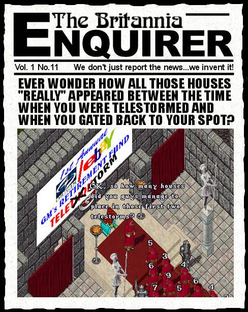

Haha! A conspiracy theory. Was that a GM I saw up on the grassy knoll taking a bead at me with his Telestorm Gun? Are all those names on Ebay, selling placed castles and towers, really nom-de-plumes for Origin Employees secretly fattening their wallets off our misfortune? While I was desperately running from the inn in Felucca in Vesper after being telestormed, was a group of shadowy robed figures plonking down towers and other larges on an empty Trammel shard? Wonder if Oliver Stone would like this as theme for his latest epic movie. Bah! anyway, if anyone has a tower on Trammel they would like to sell me, I would be forever grateful.
later...Tryon